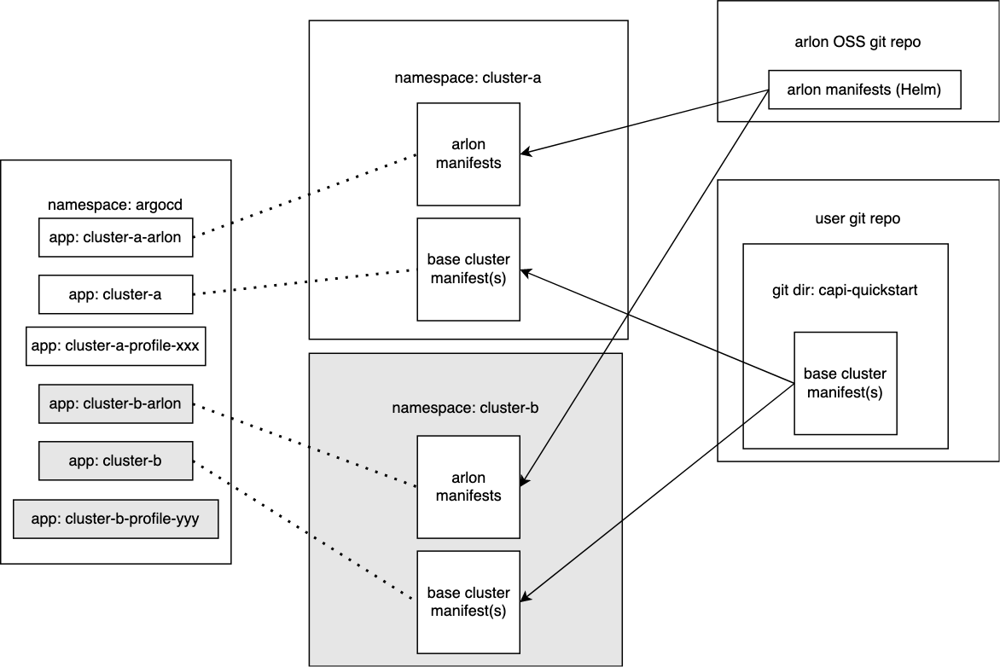

Next-gen Cluster Provisioning using Base Clusters
This proposal describes a new way of provisioning workload clusters in Arlon. The most significant change is the Base Cluster construct, which replaces the current ClusterSpec. To distinguish them from current generation clusters, the ones deployed from a base cluster are called next-gen clusters.
Goals
- Allow users to deploy arbitrarily complex clusters using the full Cluster API feature set.
- Fully declarative and gitops compatible: a cluster deployment should be composed of one or more self-sufficient manifests that the user can choose to either apply directly (via kubectl) or store in git for later-stage deployment by a gitops tool (mainly ArgoCD).
- Support Linked Mode update: an update to the the base cluster should automatically propagate to all workload clusters deployed from it.
Profile support
- While profiles are also being re-architected, the first implementation of next-gen clusters fully integrates with current-generation profiles, which are expressed as Profile custom resources and compiled into a set of intermediate files in a git repository.
- Profiles are optional, and a next-gen cluster can be created without a profile. One can be attached later.
Architecture diagram
This example shows a base cluster named capi-quickstart used to deploy two workload
clusters cluster-a and cluster-b. Additionally, cluster-a is given profile xxx,
while cluster-b is given profile yyy.

Base Cluster
A base cluster serves as a base for creating new workload clusters. The workload clusters are all exact copies of the base cluster, meaning that they acquire all unmodified resources of the base cluster, except for: - resource names, which are prefixed during the cluster creation process to make them unique to avoid conflicts - the namespace, which is set to a new namespace unique to the workload cluster
Preparation
- To create a base cluster, a user first creates a single YAML file containing the desired Cluster API
cluster and all related resources (e.g. MachineDeployments, etc...), using whatever tool the user
chooses (e.g.
clusterctl generate cluster). The user is responsible for the correctness of the file and resources within. Arlon will not check for errors. For example, the specified Kubernetes version must be supported by the Cluster API providers currently installed in the management cluster. If it isn't, resulting clusters will fail and enter a perpetual OutOfSync state. - The user then commits and pushes the manifest file to a dedicated directory in a git repository. The name of the cluster resource does not matter, it will be used as a suffix during workload cluster creation. The directory should be unique to the file, and not contain any other files.
- If not already registered, the git repository should also be registered in ArgoCD with the proper credentials for read/write access.
To check whether the git directory is a compliant Arlon base cluster, the user runs:
arlon basecluster validategit --repo-url <repoUrl> --repo-path <pathToDirectory> [--repo-revision revision]
Note: if --repo-revision is not specified, it defaults to main.
The command produces an error the first time because the git directory has not yet been "prepped". To "prep" the directory to become a compliant Arlon base cluster, the user runs:
arlon basecluster preparegit --repo-url <repoUrl> --repo-path <pathToDirectory> [--repo-revision revision]
This pushes a commit to the repo with these changes:
- A kustomization.yaml file is added to the directory to make the manifest customizable by Kustomize.
- A configurations.yaml file is added to configure the namereference
Kustomize plugin which ensures reference fields are correctly set when pointing to resource names
that ArgoCD will modify using the Kustomize nameprefix
mechanism. The content of the file is sourced from this Scott Lowe blog article.
- All namespace properties in the cluster manifest are removed to allow Kustomize to override the
namespace of all resources.
If prep is successful, another invocation of arlon basecluster validategit should succeed as well.
Workload clusters
Creation
Use arlon cluster create to create a next-gen workload cluster from a base cluster
(this is different from arlon cluster deploy for creating current-generation clusters).
The command creates between 2 and 3 (depending on whether a profile is used)
ArgoCD application resources that together
make up the cluster and its contents. The general usage is:
arlon cluster create --cluster-name <clusterName> --repo-url <repoUrl> --repo-path <pathToDirectory> [--output-yaml] [--profile <profileName>] [--repo-revision <repoRevision>]
The command supports two modes of operation:
- With --output-yaml: output a list of YAML resources that you can inspect, save to a file, or pipe to kubectl apply -f
- Without --output-yaml: create the application resources directly in the management cluster currently referenced by your KUBECONFIG and context.
The --profile flag is optional; a cluster can be created with no profile.
Composition
A workload cluster is composed of 2 to 3 ArgoCD application resources, which are named
based on the name of the base cluster and the workload cluster. For illustration purposes,
the following discussion assumes that the base cluster is named capi-quickstart, the
workload cluster is named cluster-a, and the optional profile is named xxx.
Cluster app
The cluster-a application is the cluster app for the cluster.
It is responsible for deploying the base cluster resources, meaning the Cluster API manifests.
It is named directly from the workload cluster name.
The application's spec uses a ApplicationSourceKustomize that points to the base cluster's git
directory. The spec ensures that all deployed resources are configured to:
- Reside in the cluster-a namespace, which is deployed by the arlon app (see below).
This achieved by setting app.Spec.Destination.Namespace to the workload cluster's name
(this only works if the resources do not specify an explicit namespace; this requirement is
taken care of by the "prep" step on the base cluster).
- Be named cluster-a-capi-quickstart, meaning the workload cluster name followed by the
base cluster name. This is achieved by setting app.Spec.Source.Kustomize.NamePrefix to
the workload cluster name plus a hyphen.
Arlon app
The cluster-a-arlon application is the arlon app for the cluster.
It is resposible for deploying:
- The cluster-a namespace, which holds most resources related to this workload cluster,
such as the Cluster API manifests deployed by the cluster app.
- Resources required to register the workload cluster with argocd when available:
ClusterRegistration and associated RBAC rules.
- Additional resources (service account, more RBAC rules) for Cluster Autoscaler if enabled.
The application spec's ApplicationSource points to the existing Arlon Helm chart located here by default: - Repo: https://github.com/arlonproj/arlon.git - Revision: private/leb/gen2 (IMPORTANT: NEEDS TO CHANGE TO STABLE BRANCH OR TAG) - Path: pkg/cluster/manifests
This is the same Helm chart that current-generation clusters are deployed from, using arlon cluster deploy.
When used for the arlon app for a next-gen cluster, the Helm parameters are configured to only deploy
the Arlon resources, with the subchart for cluster resources disabled, since those resources will
be deployed by the cluster app.
Important issue: as described above, the application source resides in the public Arlon repo. To avoid breaking user's deployed clusters, the source must be stable and not change! - This probably means a particular Arlon release should point the source to a stable tag (not even a branch?) - As an alternative, during Arlon setup, allow the user to copy the Helm chart into a private repo, and point the source there.
Profile app (optional)
A next-gen cluster can be assigned a current-gen dynamic profile, in which case Arlon creates
a profile app named <clusterName>-profile-<profileName>, or cluster-a-profile-xxx in the running
example.
This is similar to the profile app created when attaching a profile app to an external cluster. The application source points to the git location of the dynamic profile.
Teardown
Since a next-gen cluster is composed of multiple ArgoCD applications, destroying the cluster
requires deleting all of its applications. To facilitate this, the 2 or 3 applications created
by arlon cluster create are automatically labeled with arlon-cluster=<clusterName>.
The user has two options for destroying a next-gen cluster:
- The easiest way: arlon cluster delete <clusterName>. This command automatically detects a next-gen
cluster and cleans up all related applications.
- A more manual way: kubectl delete application -l arlon-cluster=<clusterName>
Update Semantics
A base cluster lives in git and is shared by all workload clusters created from it. This is sometimes referred to as Linked Mode. Any git update to the cluster can affect the associated workload clusters, therefore such updates must be planned and managed with care; there is a real risk of such an update breaking existing clusters.
- By default, a workload's cluster cluster app is configured with auto-sync, meaning ArgoCD will immediately apply any changes in the base cluster to the deployed Cluster API cluster resources.
- In general, a base cluster does not need to be "prepped" again after a modification to its main manifest file (the one containing the Cluster API resources). So the user is free to edit the manifest directly, commit/push the changes, and expect to see immediate changes to already-deployed clusters created from that base cluster.
Unsupported changes
The controllers for Cluster API and its providers disallow changes to some fields belonging
to already-deployed resources.
- For example, changing the base cluster name (medata.Name of the Cluster resource) will have disastrous consequences on already-deployed
clusters, causing many resources to enter the OutOfSync state and never recover because ArgoCD
fails to apply the changes (they are rejected by the controllers). Consequently, a user should never
change the name of a base cluster.
- Besides the cluster name, other fields cannot change (this has been observed anecdotally, we don't
yet have an exhaustive list).
- Changing the Kubernetes version of the control plane or data plane is supported, so long as the new version
is supported by the relevant providers. If accepted, such a change will result in a rolling update
of the corresponding plane.